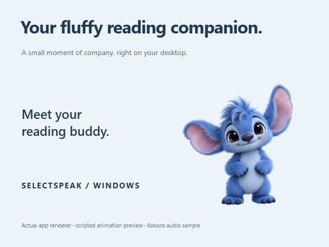
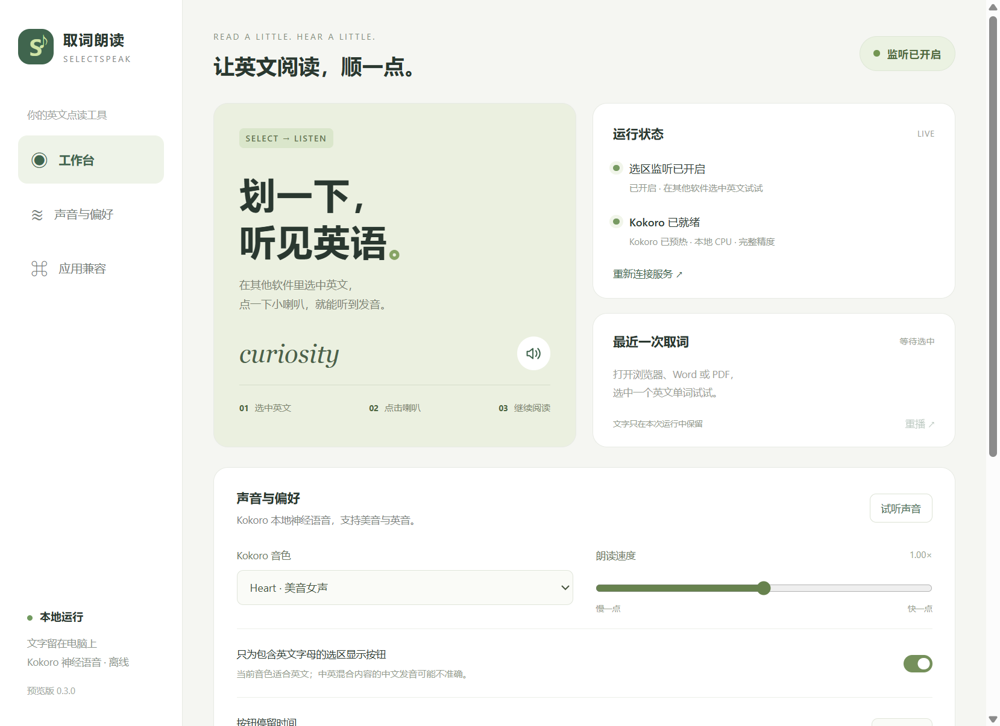

A little English. A little company.
A fluffy companion
for your reading breaks.
Select English, tap the floating speaker, and hear it read aloud locally. SelectSpeak brings a voice to your reading—and a little blue company to your desktop.
Small reading buddy.
From the page to your ears
Read a little.
Hear a little.
Stay with what you're reading. Three small steps bring English into the conversation. Selection behavior still needs testing across applications.
- 01
Select English
Highlight an English word or passage you want to hear.
- 02
Tap the floating speaker
Use the speaker beside your selection to start reading.
- 03
Hear local Kokoro speech
Speech is synthesized on your CPU. Listen, then carry on reading.
A voice, right here
Less description.
More listening.
This is an actual Kokoro Heart voice sample. Press play to hear it—nothing plays automatically.
Kokoro-82M · fp32 · Local CPU speech synthesis


Here for the little moments
A small pause.
A soft little friend.
In the Windows app, click to pet, double click to jump, drag to find a new spot, and right click for the menu. The head pat at the top of this page is a lightweight web preview.
The app, as it is
A simple place to
settle into reading.
Check speech status and adjust the voice and reading speed. The app interface is primarily Simplified Chinese; documentation and quickstart are bilingual.

Make yourself at home
A ZIP. A desktop.
A place to start.
A portable package for Windows 10/11 x64. The 326 MB speech model and runtime are included, so the download is substantial.
v0.3.0 is an unsigned preview build. Read the release notes before running it.
Read release notes- 01
Download and extract
Download the Windows x64 ZIP. Extract the whole folder, keeping the bundled model and runtime together.
- 02
Open the app, check speech is ready
Check Kokoro status in the workbench and try a voice sample.
- 03
Try a little English
Select English in your reading app and tap the floating speaker. If capture fails, report the app and version.
Does it work in every application?
That isn't a promise we can make. Selection capture depends on the application, its version, and the document. Full manual acceptance across Word, PDF readers, and Markdown software is still incomplete. App versions and reproducible reports are welcome.
Does speech need an internet connection?
Speech is synthesized locally on your CPU with the bundled Kokoro-82M fp32 model, without a cloud TTS service. This describes speech synthesis, rather than making a claim about every component's network behavior.
Which systems and languages is it for?
This release targets Windows 10/11 x64 and focuses on English reading. The interface is primarily Simplified Chinese, with bilingual documentation and quickstart. This release makes no promise of macOS, Linux, or ARM support.
Why is the download large?
The portable package includes the 326 MB speech model plus its runtime for local synthesis. 326 MB is the model size, not the total ZIP download size.
Can I contribute or report a problem?
Yes. The project source uses the MIT license; third-party models and dependencies keep their own licenses. Issues and pull requests are welcome on GitHub. Include Windows and application versions, reproducible steps, and non-sensitive sample text in bug reports.
For the next thing you read